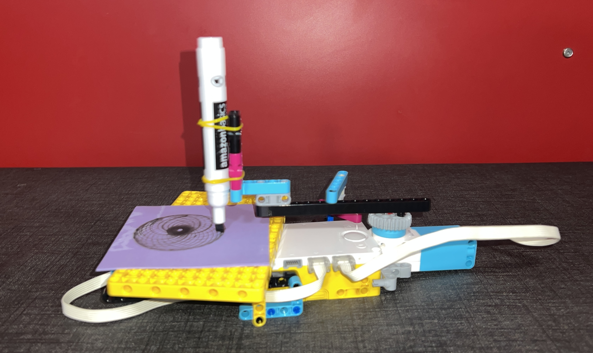

After spending the week learning how to use the motors and gears, our latest assignment was building a drawing machine that makes patterns like those in the spirograph drawing kits. By making both the platform holding the paper and the arm holding the marker spin separately, a spirograph design was created. Click here to see my project